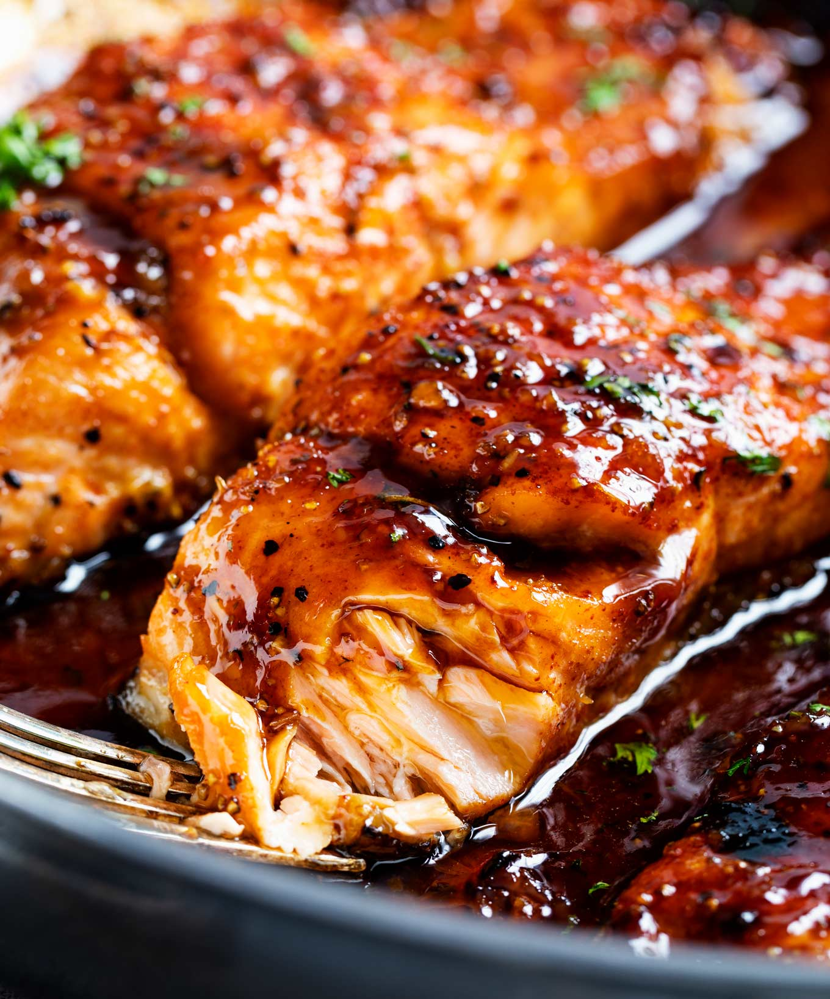

Honey Glazed Salmon

Description
Honey glazed salmon is a deliciously sweet and savory dish featuring
tender, flaky salmon fillets coated in a rich glaze made from honey, soy
sauce, garlic, and a hint of citrus. As it cooks, the glaze caramelizes,
creating a beautiful golden crust that enhances the natural richness of
the fish. Perfectly balanced in flavor, this dish pairs wonderfully with
roasted vegetables, rice, or a fresh salad for a wholesome and satisfying
meal.
Ingredients
Salmon
- 4 (6 oz each) salmon filets
- 1/2 tsp kosher salt
- 1/2 tsp black pepper
- 1/2 tsp smoked paprika (or regular paprika)
- 1/4 tsp blackening seasoning (optional)
Sauce
- 3 Tbsp butter
- 2 tsp olive oil
- 6 cloves garlic minced
- 1/2 cup honey
- 3 Tbsp water
- 3 Tbsp soy sauce
- 1 Tbsp sriracha sauce
- 2 Tbsp lemon juice
Steps
-
Pat salmon dry, then season with salt, pepper, paprika and blackening
seasoning (if using). Set aside.
-
IMPORTANT: Adjust oven rack to middle position, then
preheat broiler. If you broil this with the rack up high the sauce will
burn.
-
Add butter and oil to a large, oven-safe skillet over MED-HIGH heat.
Once butter is melted, add garlic, water, soy sauce, sriracha, honey and
lemon juice and cook 30 seconds or so, until sauce is heated through.
-
Add salmon, skin side down (if using salmon with skin), and cook 3
minutes. While salmon cooks, baste frequently with sauce from the pan by
spooning it over the top of the salmon.
-
Broil salmon for 5-6 minutes, basting with sauce once during the broil,
until salmon is caramelized and cooked to desired doneness.
- Garnish with minced parsley if desired.
Home